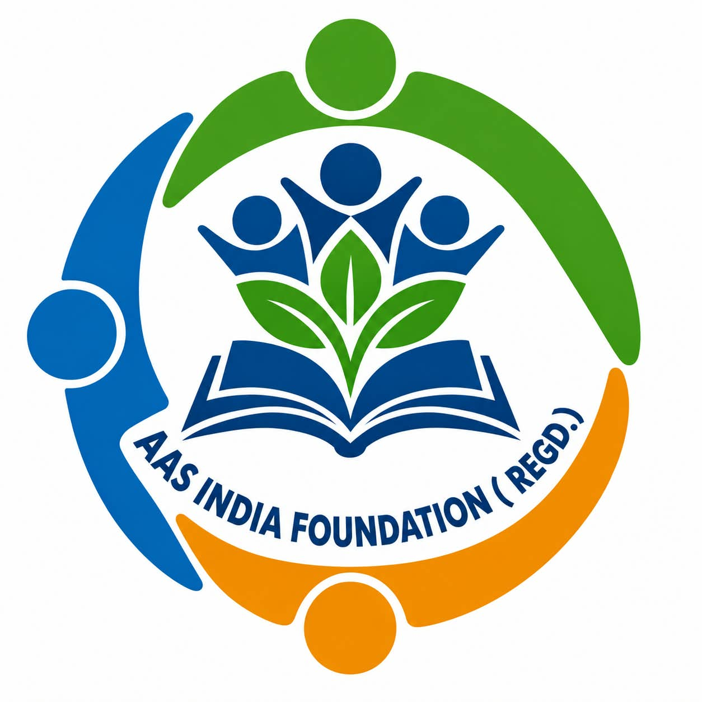
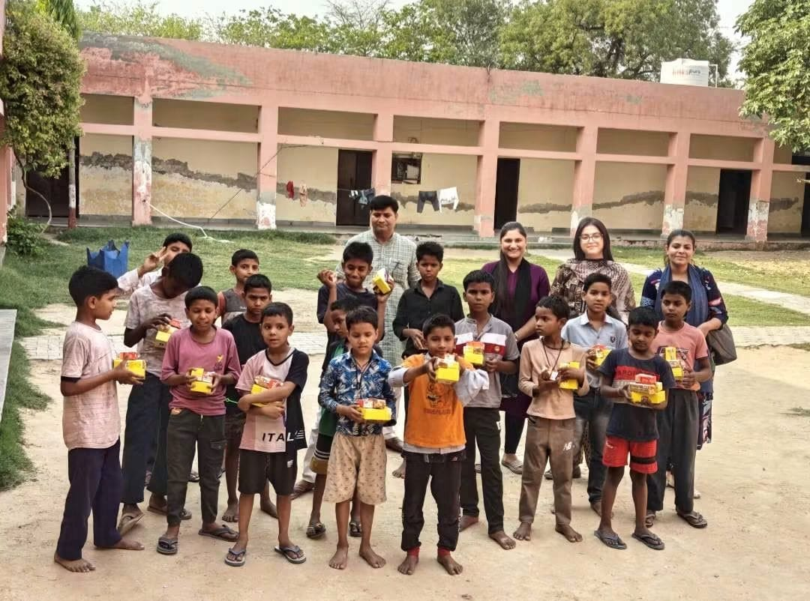
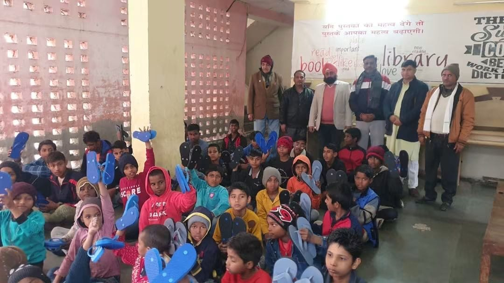
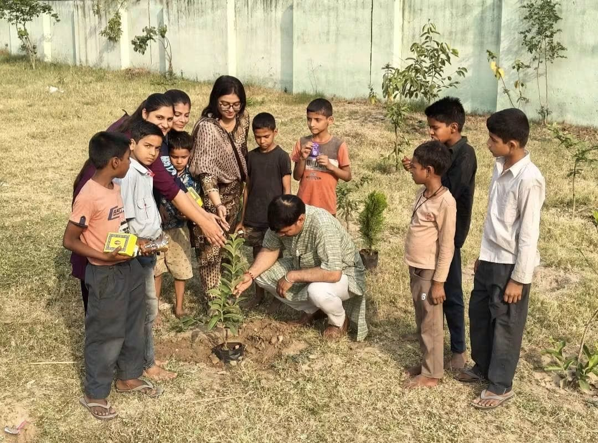
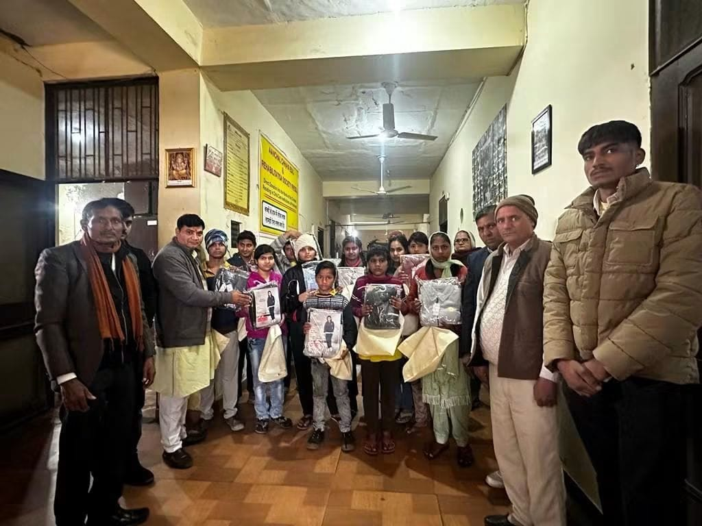
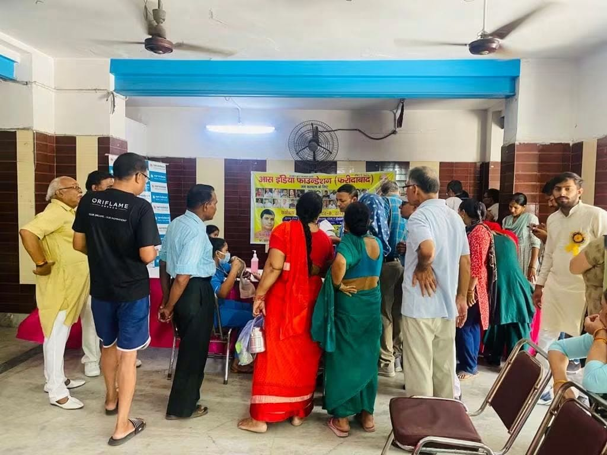
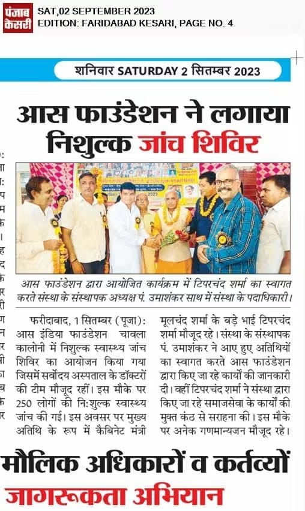
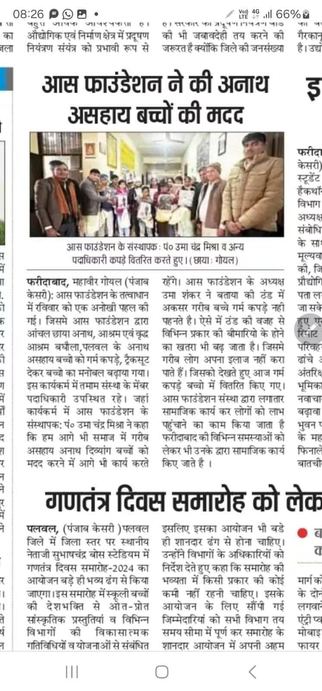

01
Community health camps
Free health-check-up camps that bring medical attention and awareness closer to people who need it.
See press coverage ↗
Donate →care in action
AAS India Foundation supports children and communities with health camps, essential items and education-focused community work in and around Faridabad.


about aas india foundation
From free health check-ups to support for children with warm clothing, footwear and essential items, we work with communities to bring practical help, dignity and hope.
Explore our work →our work
We focus on simple, meaningful support that helps children, families and local communities live with greater safety, health and confidence.
01
Free health-check-up camps that bring medical attention and awareness closer to people who need it.
See press coverage ↗02
Support drives that provide children with useful everyday items and a moment of care they can feel.
View gallery ↗03
Education-focused community activities that encourage children to stay connected to learning and opportunity.
View gallery ↗04
Tree-planting activities that bring children, volunteers and communities together for a greener future.
View gallery ↗our promise
“No child should feel unseen when a community can stand beside them.”
We believe practical support, given with respect, can make a lasting difference. Every activity starts with people, their everyday needs and the strength already within their community.
how we work
work in the community
Our work includes community activities that can be seen in the field and in local press coverage. We are grateful to every volunteer and supporter who makes these moments possible.
Punjab Kesari reported that over 250 people received free health checks during an AAS Foundation camp in Chawla Colony.
Health supportLocal press highlighted AAS Foundation’s distribution of warm clothing and tracksuits to children in Palwal.
Essential itemsOur team continues to meet children and communities through education and essential-support activities.
Community caregallery



in the news
These clippings document AAS Foundation activities reported by Punjab Kesari in Faridabad.


get involved
Donate, volunteer or partner with us to help reach more children and families with care.
Donate by bank transfer
Use the account details below to support AAS India Foundation. For a donation confirmation or question, please call or email us.
Volunteer with us
Whether you would like to help at a community activity, share a skill or bring a group together, please get in touch with the AAS India Foundation team.
Partner with us
We welcome conversations with schools, community groups, local businesses and organisations that want to support children and communities.
connect with confidence
For information about our activities, donations or community support drives, contact us directly. We value the trust of every person who stands with this work.
aasindiafoundation.in@gmail.com →responsible giving
AAS India Foundation is 12A and 80G registered, and welcomes CSR partnerships that create practical value for children and communities.
Registered status for the foundation’s charitable activities.
Eligible donors may request an 80G receipt, subject to applicable tax rules.
We welcome CSR conversations for health, education, environment and community-care initiatives.
contact us
We would be glad to hear from supporters, volunteers, community members and partners.